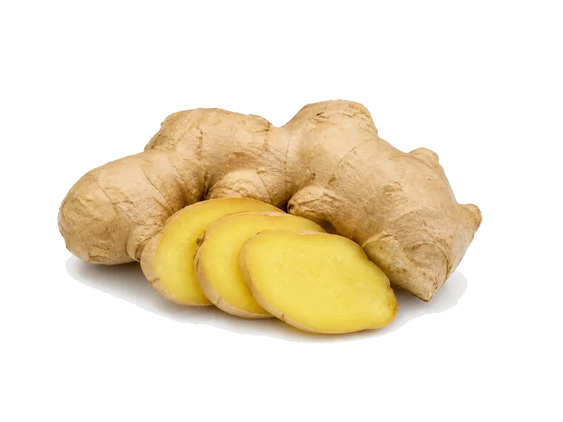

Warzywa
Imbir świeży
Imbir świeży: 1.8 g białka, 80 kcal, 18 g węglowodanów i 0.8 g tłuszczu na 100 g. Kategoria: Warzywa.
Kalorie80 kcalna 100 g
Białko / proteiny1.8 g
Węglowodany18 g
Tłuszcz0.8 g
Cena (szac.)~2,90 złza 100 g
Ceny zaktualizowano: maj 2026 (szacunek — ceny w popularnych supermarketach)
Porcja: plaster (10g)
| Kalorie | 8 kcal |
|---|---|
| Białko | 0.2 g |
| Węglowodany | 1.8 g |
| Tłuszcz | 0.1 g |
| Cena (szac.) | ~0,29 zł |
Szczegółowe składniki odżywcze na 100 g
| Wartość energetyczna (kalorie) | 80 kcal |
|---|---|
| Białko (proteiny) | 1.8 g |
| Węglowodany | 18 g |
| Tłuszcz | 0.8 g |
| Tłuszcze nasycone | 0.2 g |
| Tłuszcze nienasycone | 0.6 g |
| Witaminy i minerały | Witamina C, Kwas foliowy, Potas |
| Współczynnik kcal / 1 g białka | 44.4 |
| Cena produktu (szac. za 100 g) | ~2,90 zł |
| Cena za 100 g białka (szac.) | ~161,11 zł |